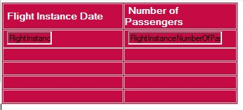
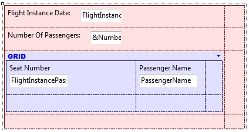

As it was mentioned before when introducing Inline Formulas, the fact a formula has a table in its context at evaluation time will affect its result. And its very definition, either. Whether horizontal, the context is required in order to determine which record of its base table is "the one". Also the formula itself will affect this contextual table determination. Thus, you have a mutual influence. Whether aggregate, however, the context is not necessary, but if there exists, will cause not all the records the formula explicitly states are considered, but only those also matching implicit conditions arising from that context. When this happens, you are allowed to include attributes of that contextual table (and its extended) into the formula definition as known values (from context, indeed). Contrary to what happens with horizontal formulas, aggregation ones are not involved in determining the context base table at all. In other words, its attributes are only involved in determining the formula base table itself. What scenarios state contextual table?
ExamplesGiven the following transaction:
FlightInstance //transaction name = first level name
{
FlightInstanceId*
FlightInstanceDate
FlightInstanceNumberOfPassengers
FlightNumber
FlightDescription
Seat //level name
{ PassengerId*
PassengerName
FlightInstancePassengerSeatNumber }
}
Look at the following examples of inline formulas programmed inside a context with base table: Example 1For each FlightInstanceNumberOfPassengers = Count(FlightInstancePassengerSeatNumber) EndFor First of all, note that you are assigning a formula to an attribute. As it is an inline formula (local calculation), the attribute physically exists in a table. So, the result of the calculation is assigned to the attribute, to be stored in the corresponding record with which you are working (so, the code must be inside a Procedure object source). Only when defining a Global Formulas the attribute is a "virtual" definition. In this example, the table navigated by the formula is FLIGHTINSTANCESEAT because the unique attribute involved in the formula definition is: FlightInstancePassengerSeatNumber, which is stored in that table. And the For Each base table is FLIGHTINSTANCE (this is determined by the unique attribute which is present inside the For Each and outside of the formula: FlightInstanceNumberOfPassengers). Note: as of GeneXus X Evolution 3 you would probably have specified the BaseTrn in the for each (i.e. for each FlightInstance...) Thus, the For Each command is navigating all the flight instances, and for each one, the Count formula is navigating its passengers and counting them. As there is a common attribute in both navigated tables (FLIGHTINSTANCE and FLIGHTINSTANCESEAT), which is FlightInstanceId, the formula automatically counts for each flight instance, its assigned passengers (in other words, the filter FLIGHTINSTANCESEAT.FlightInstanceId = FLIGHTINSTANCE.FlightInstanceId is included automatically in the generated code associated to the formula). Example 2Note the same is valid for formulas assigned to any Data provider Element inside a Data provider Group statement with base table, due to the equivalence between for each command and group of a Data Provider. Having a Data Provider that returns a collection SDT as output, ActualFlights:
ActualFlights
{
FlightInstance
{
Date = FlightInstanceDate
NumberOfPassengers = Count( FlightInstancePassengerSeatNumber)
}
}
Note that you are doing the same than the previous example: the group ActualFlights is navigating all the flight instances (its base table is FLIGHTINSTANCE by means of the attribute FlightInstanceDate at the right of the "="), and for each one, the Count formula is navigating its passengers and counting them (the table navigated by the formula is FLIGHTINSTANCESEAT). Remember that the FlightInstancePassengerSeatNumber attribute participates in the formula definition, but not in the group definition. Example 3An analogous context than before you would have if you had a grid in a web panel (with base table: FLIGHTINSTANCE):  with the following Event code: Event Load FlightInstanceNumberOfPassengers = Count( FlightInstancePassengerSeatNumber) endevent Due to the grid base table, the Load will be executed once for each FlightInstance record being loaded into the grid. Example 4Having a Panel for Smart Devices that receives as parameter FlightInstanceId and then shows its information:  In order to assign the variable &NumberOfPassengers the corresponding value, and remembering the Refresh event executes when the form fixed part is being loaded: Event Refresh &NumberOfPassengers = Count( FlightInstancePassengerSeatNumber ) endevent Example 5
For each order FlightInstanceDate
where Count(FlightInstancePassengerSeatNumber) > 50
....
Endfor
Here you have an example in which an inline formula is defined in the Where clause. The For Each base table is FLIGHTINSTANCE (this is determined by the unique attribute which is present in the For Each command and outside of the formula: FlightInstanceDate); and the table navigated by the formula is FLIGHTINSTANCESEAT because the unique attribute involved in the formula definition is: FlightInstancePassengerSeatNumber. Note that there is an implicit filter determined by GeneXus for the formula, which is: FLIGHTINSTANCE.FlightInstanceId = FLIGHTINSTANCESEAT.FlightInstanceId (as FlightInstanceId is a common attribute between the For Each base table and the navigated table by the formula, the formula automatically counts the assigned passengers for the flight instance which is being navigated). Summing up, the For Each command is navigating all the flight instances that have more than 50 passengers.
|
| Backlinks | ||
| Examples of Using Formulas | Toc:GeneXus - Table of contents | Inline Formulas |